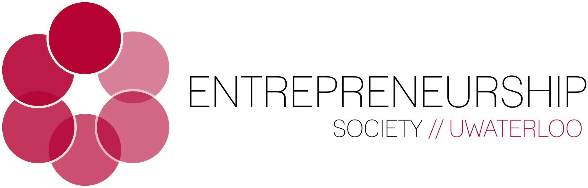
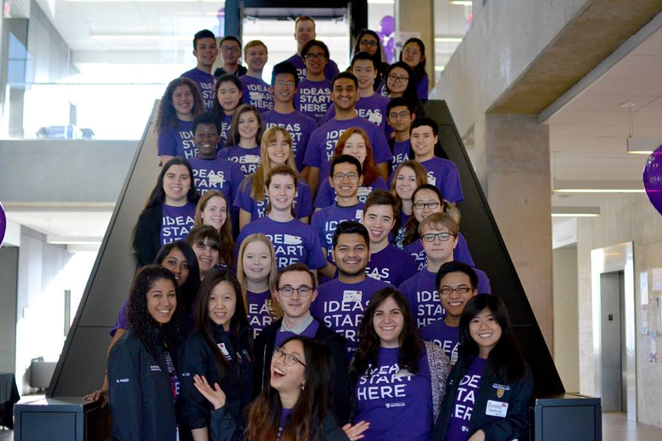
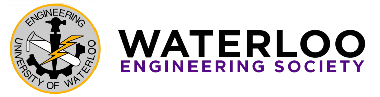
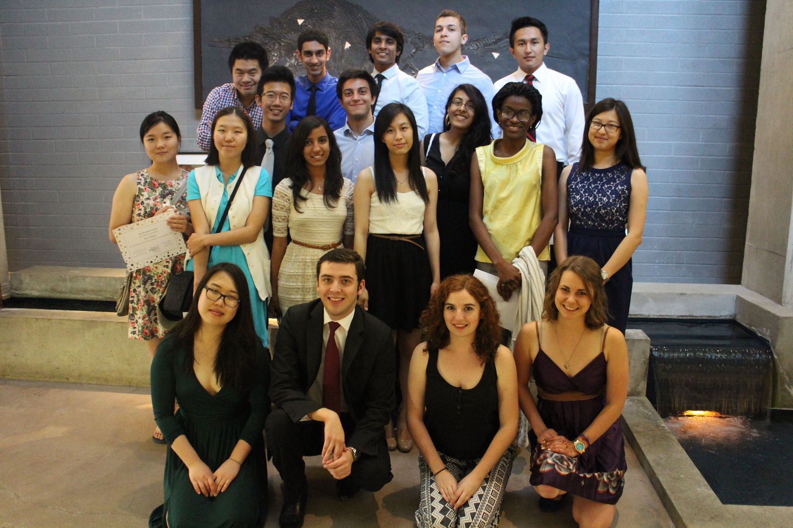
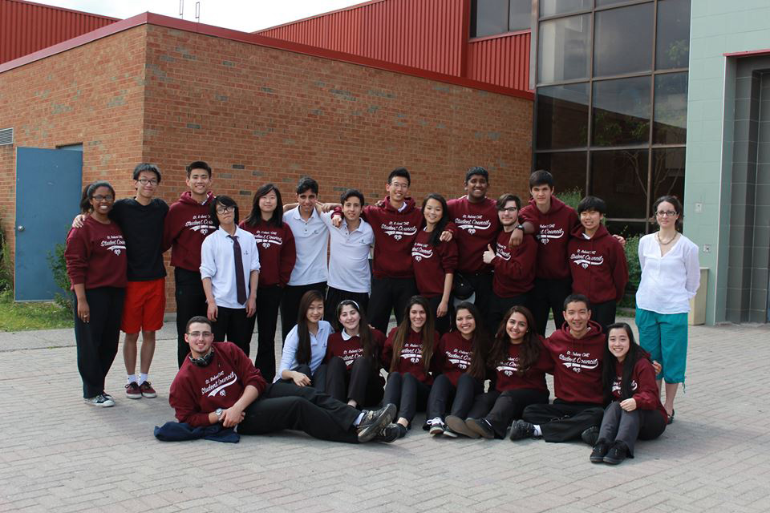

Entrepreneurship Society (EntSoc)
Past Positions: VP Operations (Mixer + Startup Chats), Operations Director
- Planed and managed logistics for UWaterloo Entrepreneurship Society's events
- Spearheaded the execution of all startup chats and the end-of-term networking mixer

Engineering Ambassador
- Communicating with prospective future students and parents as a representative for the Systems Design Engineering undergraduate program
- Volunteering at open houses, providing tours of the campus, and hosting high school students for Shadow Days
- Check out my profile here

Engineering Society (EngSoc)
Past Positions: Class Representative, Semi Formal Director, Sponsorship Committee
- Acted as a liaison between the Engineering Society and my class, and voted at EngSoc meetings
- Budgeted, marketed, and organized the Spring 2015 Semi Formal for the Faculty of Engineering and the Faculty of Science. Some slick photos from the event's backdrop can be found here
- Helped allocate $9600 in funding to various student design teams

Residence Council (ResCo)
Past Position: Spirit Chair
- Worked with a team to plan social events for the V1 and Mackenzie King Village residence communities at the University of Waterloo
- Attended weekly meetings, promoted spirit and cooperation within and outside the council

Student Council (Stuco)
Past Position: President
- Lead a high school team of 24 students; organised, budgeted and marketed over 15 school events including multiple talent shows, fundraisers, spirit weeks, semi-formals, and orientation days
- Envisioned and helped establish Presidents' Council, an improved management structure between school administration and major student groups to promote communication and cooperation